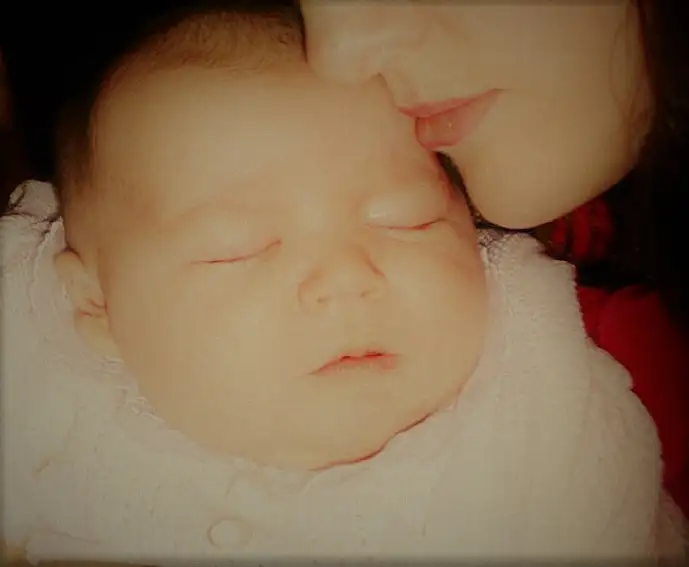

I’m totally owning this thing — this label that someone used to describe me recently.
It wasn’t used in a flattering manner, but that’s okay, because the person is completely correct. Not only am I a nut, but a crazy nut. I’m always going off about abortion like it’s the only thing in life that matters, as if it’s a matter of life and death or something.
And, well, it sort of is, but there are certainly other life and death matters too, right?
Well, I didn’t start out this way. Not by a long shot. If someone had told my 16-year-old self that someday I’d be ranting about abortion, I would have looked at them in complete denial. Back then, I knew there was this thing called abortion, but it was very hush-hush. We never spoke of it in public. And my 16-year-old self, who never wanted to make waves, who always wanted everyone to like her, would have shied away completely.
So what exactly happened?
Recently, my husband was off on a business trip and his absence gave me a chance to ponder it all. While he was away, our youngest, 11, had crawled onto his side of the bed. And late into the night, I listened as he made little sounds in his sleep, just like in days past. And I remembered…

It’s so easy to forget as we go about our lives as parents what those youngest, most tender years of raising our children were really like — especially the softer, more precious moments. But how beautiful to recall the deep and abiding gift of new life and our blessed connection to it.
I was close to my babies. I liked them near. I loved the skin to skin contact and feeling their little bodies next to mine. I loved stroking their hair, and giving them little back rubs and kisses. I loved how, when nursing, they would pat my chest or twirl my hair, and look so contented. We were “those parents” who brought our babies to bed, and for me, it was like a sleeping pill. Knowing my babies were near let me finally rest at day’s end.
Lying next to my “baby” the other night, all these remembrances returned. Later, I searched my Facebook newsfeed and caught the photo of a beautiful baby girl whose eyes were looking out at the world in wonder. In and of itself, that photo would have claimed my heart, but to learn that same sweet child had been slated for abortion…it took my breath away, to think she almost wasn’t, and now, this beautiful person is with us, eternally. If I think too deeply about it I’ll be a watery mess. Life is so beautiful.
As I returned to so many moments of being so close to my babies and how they went everywhere with me and were like an extension of me, and certainly were and still are an extension of my heart, I knew that my old friend’s words were true.
I am a nut. Totally nutty about life, and how beautiful it is, and how wonderful it feels to be so close to the creative reality of it all through bearing children, and then, bringing those cherubs into the world. It is an experience that is exquisite beyond words, really. But the images remind and bring me back.
They remind me just how completely and utterly crazy I am! Crazy for my children, and for all little lives that live and breathe and become a beautiful part of the tapestry of this fragile world, and contribute something meaningful, each, without exception.
You can talk to me until you’re blue in the face about how, well, it’s not that easy, and there are these exceptions, and it’s a complicated matter. Of course it is! Of course. I know that as well as anyone. I’ve mothered five children for heaven’s sake. I know about hard. And while I haven’t traveled any path but my own, trust me, I know. Life is messy. I get it.
But that should never be an excuse for intentionally denying anyone the chance to hold their own child, so soft and new, near their face, to breathe in the smells of heaven. It should never be reason to convince anyone of the “easy way out.” What a lie that is. And how many women and men have been damaged by it? Countless! All the reasons given for why we need abortion can never convince me that we should not, as a society, instead, focus our energies on supporting the lives that are set in motion, every single one, because each soul has the potential to transform our world for the better.
My heart does not come from a place of condemnation, but from having lived this experience, and knowing what is a lie and what is truth. If condemnation is received, I can’t own that. That’s coming from within you, not me. A loving God exists and is ready to forgive and heal, as he has done in my own life for my transgressions. I have made plenty of mistakes.
I only act, and speak, and move through my own experiences as a mother who has been touched by the sublime experience of holding five children near her body and understands the exquisite gift. Having received this gift, and lingered in it, how could I do anything to encourage or deny anyone else the same? And if there is a chance I can help lead a woman to this reality, and allay the fears that can overwhelm, then I want to be there. I don’t want my experiences and what I’ve been given to be in vain, and to simply watch as the world wallows in lies to the point that it denies itself the most wondrous gift possible — new life.
So yep, like an old camp song goes, “I’m a nut. I’m a nut. I’m a cray-zee nut.” Nuts about the beautiful reality of life that God has given us in order to draw near to him. Crazy over the smell of a newborn’s soft head, and just wanting every mother who conceives a child, and every father who has played a part in that, too, to never have to be separated from this beautiful, transforming reality.
God bless the babies and those who bring them into this beautiful world. And to those who deny this gift, dear Lord, extend mercy, and bring them to an understanding of your gentle will.
Signed,
That Crazy Nut